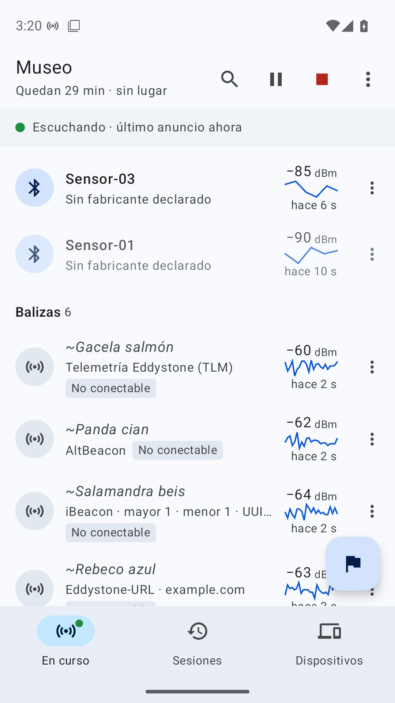
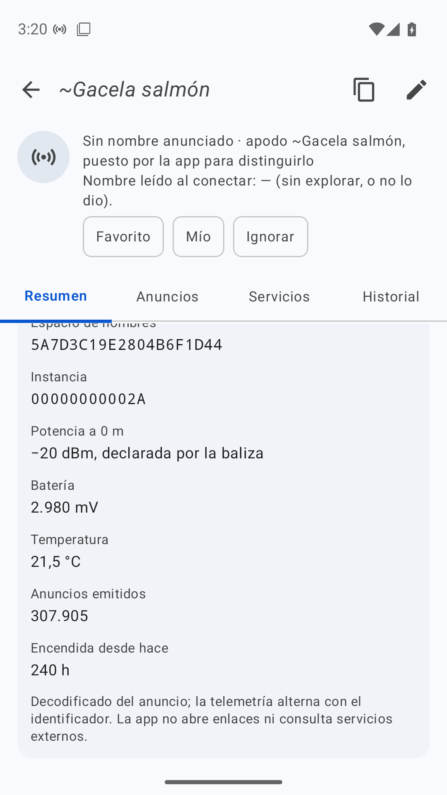

Cómo ver balizas iBeacon y Eddystone con un móvil Android: identificadores y batería
Has instalado balizas en una tienda, un museo o una oficina, o te ha llegado una de prueba, y quieres comprobar si emite, con qué identificadores y cuánta batería le queda. No hace falta la app del fabricante ni conectarse a ella. Las balizas anuncian sus identificadores por Bluetooth LE, y el móvil puede oírlos. La batería solo la anuncian algunas: las que envían telemetría Eddystone (TLM).
Los tres formatos que vas a encontrar
| Formato | Quién lo define | Qué anuncia |
|---|---|---|
| iBeacon | Apple | Un UUID, un número mayor y otro menor, y la potencia esperada a 1 m |
| Eddystone | Varios tipos de trama: UID (espacio de nombres e instancia), URL, TLM (telemetría) y EID (identificador cifrado que cambia) | |
| AltBeacon | Especificación abierta | Un identificador y la potencia de referencia, parecido a iBeacon |
Muchas balizas emiten varios a la vez, por ejemplo iBeacon y Eddystone-TLM alternando.
Paso a paso con Observador BLE
- Empieza una sesión cerca de las balizas. Con la versión gratuita dura hasta 30 minutos.
- En la vista Lista, baja hasta la sección Balizas, separada de los aparatos con nombre.
- Toca una para ver su contenido, decodificado del anuncio:
- iBeacon: UUID, mayor, menor y potencia a 1 m. Si es el UUID de ejemplo de Apple que la app conoce (74278BDA-…), la Lista lo dice: es habitual en balizas genéricas.
- Eddystone-UID: espacio de nombres e instancia.
- Eddystone-URL: la dirección que anuncia. La app la muestra, pero no la abre.
- Eddystone-TLM: batería en milivoltios, temperatura, cuántos anuncios lleva emitidos y cuánto tiempo lleva encendida.
- Mira el intervalo, con cuidado. El intervalo típico es el tiempo medio entre los anuncios que oyó el móvil. Android no escucha todo el rato y se pierde anuncios, así que suele salir mayor que el configurado: no sirve para medirlo.
- Muévete con el mapa en directo para saber cuál es cuál cuando hay varias: la que tienes delante suele ser la que se oye más fuerte.


Revisar todas las balizas de un edificio
Para una instalación grande, graba una sesión recorriendo el edificio y pon una marca en cada sala. Después, con Pro, exporta a Excel o CSV y desactiva los seudónimos: vienen activados y cambian los identificadores por códigos como BEACON-001. La hoja Beacons tiene una fila por baliza con:
- el formato y sus identificadores (UUID, mayor y menor, o espacio de nombres e instancia);
- la batería, la temperatura, el contador de anuncios y el tiempo encendida, si envía telemetría;
- la potencia declarada y la mediana de la señal recibida.
La hoja Devices dice en qué marcas se oyó cada dirección, y al exportar también puedes elegir una sola marca.
Compáralo con tu lista de balizas para ver cuáles no se oyeron, cuáles tienen la batería baja o cuáles siguen con un UUID de fábrica. Que no se oyera una no prueba que esté apagada.
Lo que no hace
- No configura balizas. La app solo escucha: nunca escribe en un aparato. Para cambiar el UUID, el intervalo o la potencia, usa la app del fabricante.
- No abre las URL de Eddystone ni consulta servicios externos.
- No descifra Eddystone-EID. Ese identificador está pensado para que solo lo resuelva su dueño.
- Los metros son orientativos. La señal dice cerca, medio o lejos, no la posición exacta.
Observador BLE es gratis en Google Play (Android 13 o posterior; en la UE, Estados Unidos, Reino Unido, Canadá y Australia), con un Pro de pago único para sesiones largas y exportaciones.